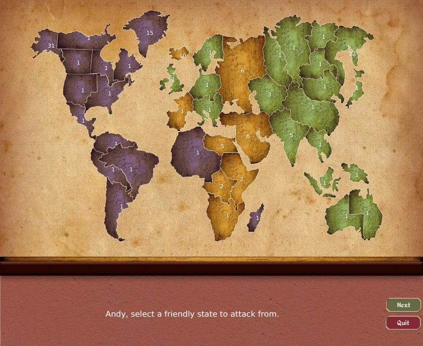

At the end of my first semester of learning programming, I elected to design my own final project. My eyes had just been opened to the world of computer science, and I was eager to put my newfound knowledge to the test and build a game of Risk from scratch.
I played a lot of this game in high school, but never on a digital interface. The challenge of this project wasn't just putting it all together, but also making an intuitive user interface so that even people who had never played Risk before could learn on the spot.
The game starts off with a welcome message, followed by a prompt to set player properties. The game supports 2-6 players, and each one can choose their own color and whether or not it's powered by a human player or artifical intelligence.

Following that, the player could then start selecting their territories. A banner will come up prompting users to select their territories, and clicking on one will automatically advance to the next person. Note that the two AIs, the purple and green players, advance continent by continent. This is to follow standard Risk strategies of capturing full continents to receive the army bonus.
I did my best to make the project as responsive to user input as possible. During the fortification phase of the game, clicking on an invalid territory (i.e. one that doesn't belong to the active player) will cause it to flash red, and the bar at the bottom will say a message reflecting why it was invalid. When a proper one is chosen, a darkening effect is applied to it, to leave an impression that it is the active one chosen.
To bar against invalid user input, I actually used a dropdown menu to ask users how many troops they wanted to work with. The reason for this was twofold: I was hoping to avoid keyboard inputs entirely, if possible, in case users were just passing a mouse around. Second, I figured it was much easier to communicate to a player how many troops they had at any given time this way; it was much easier than having them type "13" when they only had 10 troops and then evaluate that input for validity before giving the user feedback about which rule it violates, if any.
Following that bit of UI came more highlighting: this time in, the form of secondary territories to interact with. Pictured to the left, the user has already selected a territory of their own to mobilize troops from, and the game is now prompting them to select an enemy territory to attack. One can see that the only valid ones are neighboring enemy territories (you can't attack yourself, of course), and they are highlighted as such to help the user decide where to attack.
The game continues with prompts at each stage of the game, cycling through each player until the game ends, when users get the option to play again. There is also a help menu available for those who want to read more about the game.
Having never taken a course in artificial intelligence, coming up with a decent algorithm for decision making was one of the hardest parts of the project.
I ended up going with a weight-based algorithm I wrote myself. While picking territories, each continent was assigned a weight of how valuable it was, which factored into the decision-making process. The AI calculates what percentage of a continent it will have after gaining one more territory, and uses that to make a decision of where it should go next. It will always choose something neighboring its own turf unless if nothing is available.
Nonetheless, all of this was based on heuristics, and crudely guessed. The AI also evaluates threat based on the ratio of enemy troops against its own neighboring friendly troops, and it's very easy to start a cold war with the AI by continuously placing troops next to its border. The AI doesn't evaluate strategy, only immediate danger, and responds predictably as such. It does just enough to be believable and to act as somewhat of a believable player, but a bad one as such.
Debugging this project was also extraordinarily difficult, as I operated on a chain of game state enums that went back and forth. Many methods had switch statements of how to react based on what game stage it was, such as clicking on a territory, and containment and separation became very muddled as more and more objects needed references to other higher-level classes. (Having seen a bit of what a proper game engine should resemble, I can certainly see why I struggled with this using a strict object-oriented approach.)
All in all, this project was great fun to work on, and something I willingly threw tens of hours into even after I'd already surpassed full functionality. It was the first large project I made with little guidance from a course handout, and while there are certainly structural changes I'd like to make if I made this a second time, I still see it as a landmark—or checkpoint, if you will—in my programming career.